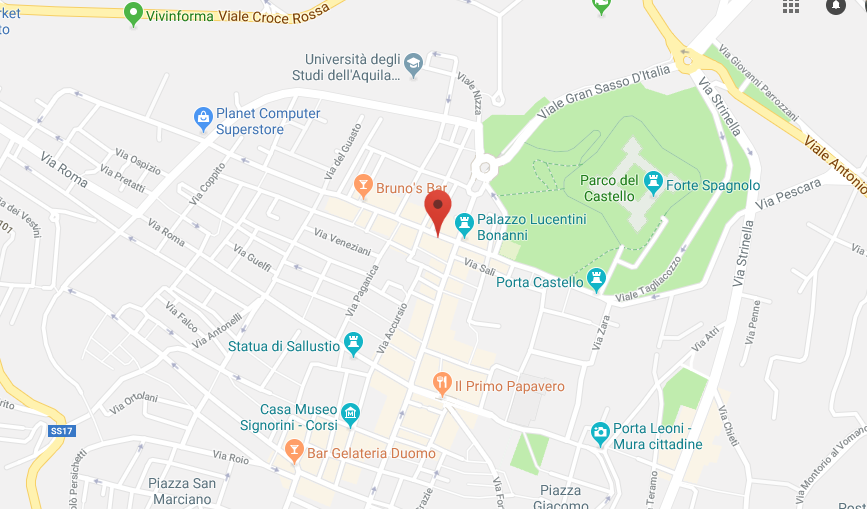

Descrizione
Questo corso è orientato agli studenti che si approcciano per la prima volta su questa fantastica disciplina e
verterà su tutti gli argomenti riguardanti analisi 1.

Luogo svolgimento lezione
Regione:
Abruzzo
Città:
L'Aquila
Cap:
67100
Via:
Giuseppe Garibaldi, 1/A
Lunedi 13 Maggio
Ora di Inizio9:0010:0011:0012:0013:00Ora di Fine9:0010:0011:0012:0013:00